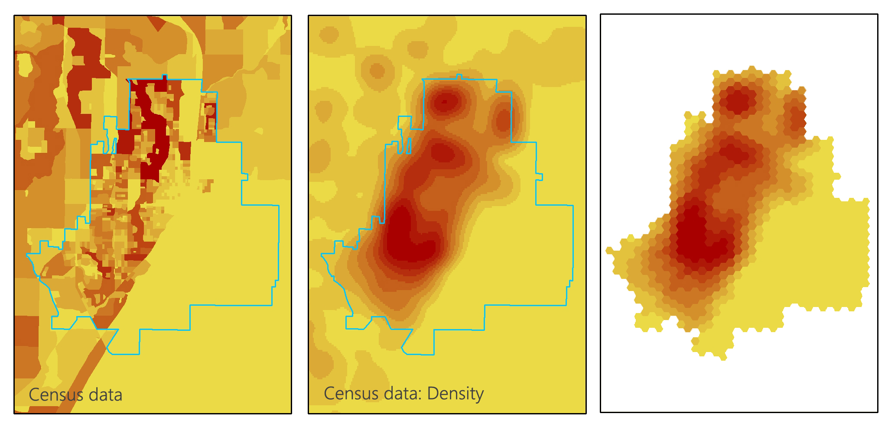
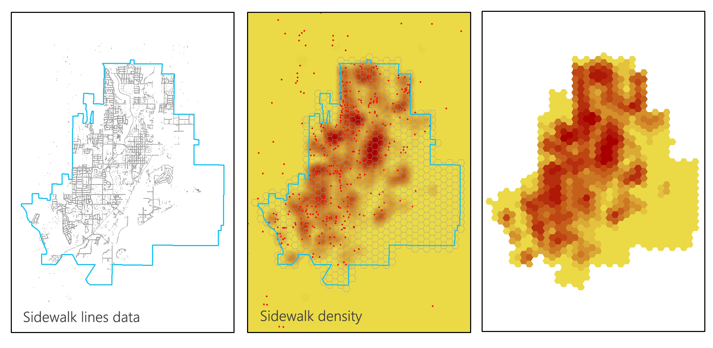
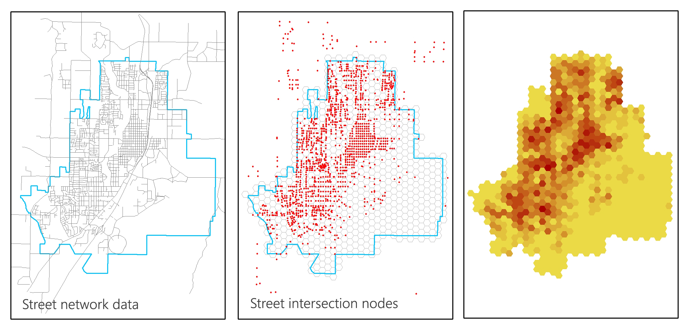
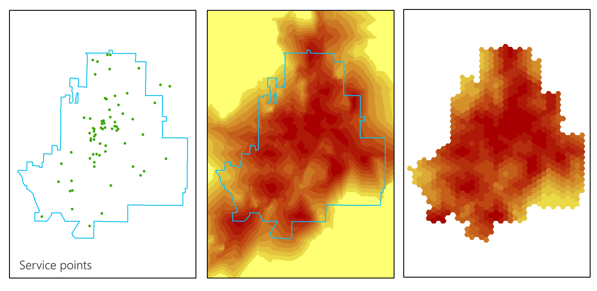
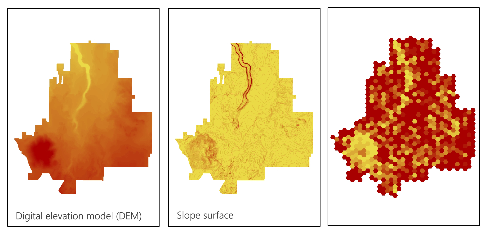
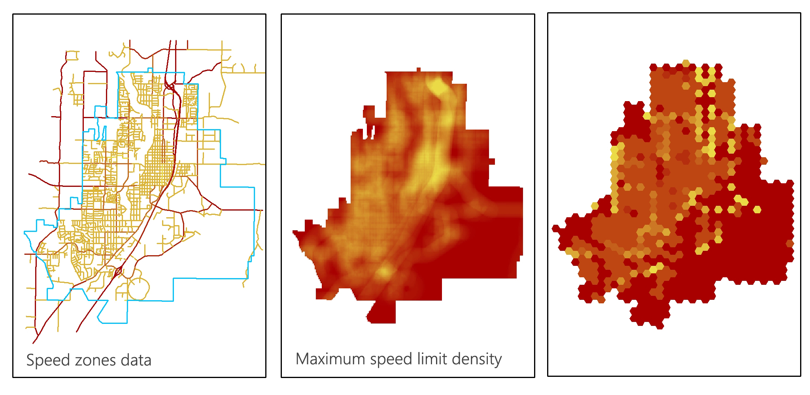
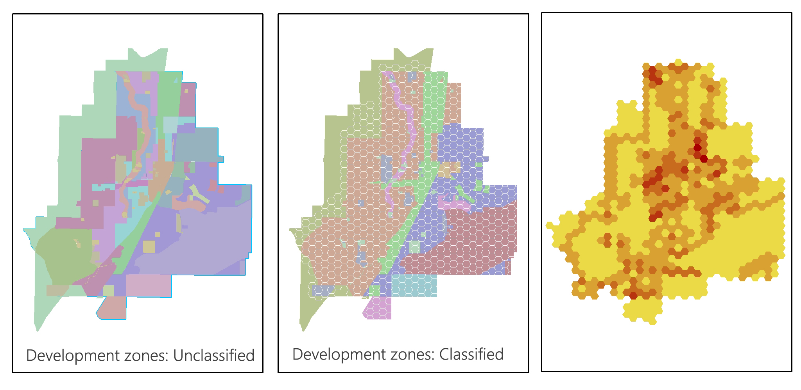
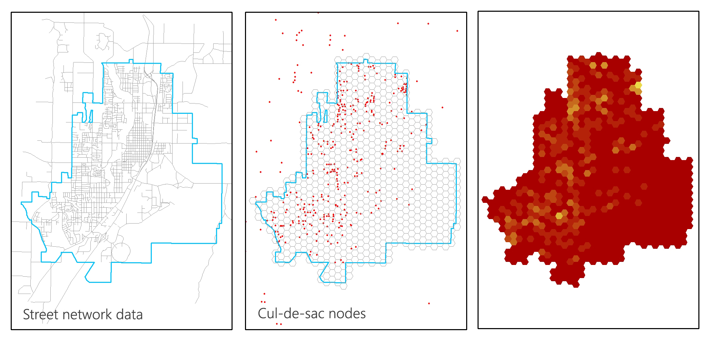

WALKABILITY
SCORE

Census data of total population in housing unit at block group level is used to create a residential density surface through kernel density analysis on ArcGIS.
The density values are then reclassified based on 1-10 scale for normalization purposes.

Sidewalk coverage density is generated using kernel density analysis from the sidewalk dataset. The density value for each hexagon is recorded. The data is then reclassified using natural break classification
based on 1-10 scale.

Street intersection nodes are generated using feature vertices to points tool on ArcGIS with point type parameter set to "start".
The number of intersection nodes within each of the hexagon is recorded. The data is then reclassified using natural break classification
based on 1-10 scale.

Network analyst tool is used to generate service buffers for 70 points of interest in Redmond, which include schools, hospitals, parks and facilities such as
fire station and police station. The average distance from hexagon centroid to the nearest amenities are
calculated and logged into its respective hexagon. The data is then reclassified using natural break classification
based on 1-10 scale.

Slope surface is created from the DEM file of Deschutes County, retrieved from USGS National Map Viewer. The average slope values are calculated for each of the hexagon. The data is then reclassified using natural break classification
based on 1-10 scale.

For this study, perceived safety only takes account of traffic speed. Other equally important factors such as
well-lit area coverage and crime density are disregarded due to data unavailability. Speed limit density surface is generated from Redmond's speed zone dataset using line density analysis. The average speed limit is calculated for each hexagon. The data is then reclassified using natural break classification
based on 1-10 scale.

The land use data is retrieved from Redmond's development zoning dataset. The number of different land use types is calculated for each hexagon and joine spatially using merge rule. The data is then reclassified manually
based on 1-10 scale.

Culs-de-sac are identified using feature vertices to points tool with point type parameter set to "dangle".
The number of culs-de-sac within each of the hexagon is recorded. The data is then reclassified manually
based on 1-10 scale.
The score for each of the walkability factor are added up together to form a composite total walkability score. Hexagons with total walkability scores of 6-10 can be considered as walkable, and those with scores 0-5 are relatively less walkable.
No specific weights are assigned to the factors, which means all factors are considered equally significant in determining the degree of walkability.
You can measure distance on the map by clicking on the ruler icon on the top-left side of the map (right under zoom control).
This web map is developed by Rudy Omri ,
graduate student at Department of Geography, University of Oregon.
Both key components of this project - GIS analysis and web cartography - are completed as part of Geography 591: Advanced GIS - Walkability in Redmond, OR coursework.
The web application is fully built using HTML/CSS, Javascript and open-source libraries: Leaflet, Mapbox, jQuery, Bootstrap.
Credits: Dr. Nick Kohler (Instructor, Geog 591), Joseph Bard (GTF, Geog 591)